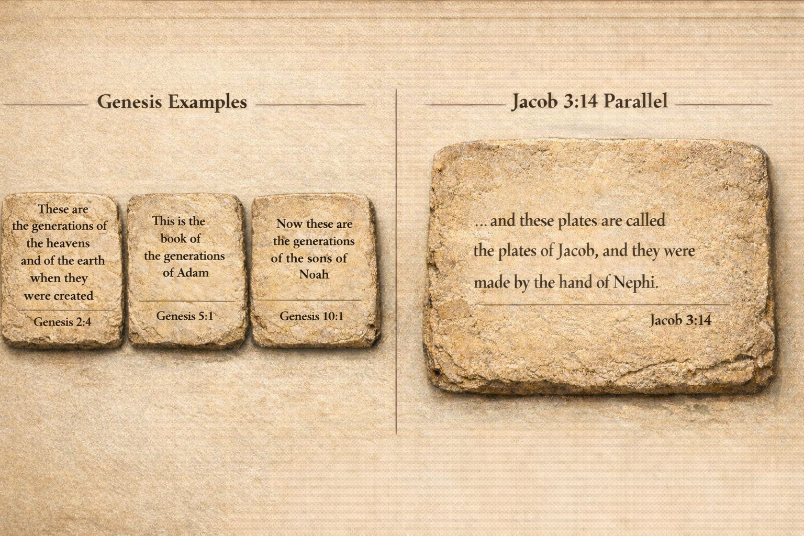

Ancient Near Eastern texts often included "colophons" - brief closing statements that identified the author, source, or custodian of a record. In Hebrew scripture, these appear as the toledot formula (תּוֹלְדֹת - "generations" or "account"), marking the end of a narrative section and establishing its provenance. These weren't decorative - they were archival fingerprints, showing how records were kept, passed down, and compiled. The Book of Genesis uses this pattern repeatedly, and each occurrence signals: this section is complete, this is who recorded it, this is how it entered the larger collection.
What's striking about Jacob 3:14 is that it mirrors this same ancient pattern. The verse doesn't advance the theology or strengthen the narrative - it's administratively mundane in exactly the way ancient record-keeping was mundane. It reads like someone closing a family archive, not a 19th-century author crafting persuasive fiction. Whether one accepts the Book of Mormon's historical claims or not, this structural detail shows an awareness of how ancient documents actually worked - the kind of detail that doesn't typically appear in modern religious literature unless the author either knew ancient scribal conventions or was, as claimed, working from ancient source material.